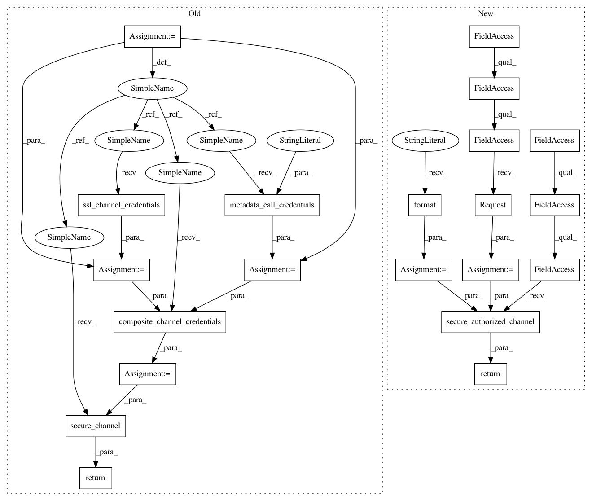

3aa5e7f2896b2e03bdb749d139140505eaa537cd,speech/grpc/transcribe_streaming.py,,make_channel,#Any#Any#,45
Before Change
def make_channel(host, port):
Creates an SSL channel with auth credentials from the environment.
// In order to make an https call, use an ssl channel with defaults
ssl_channel = implementations.ssl_channel_credentials(None, None, None)
// Grab application default credentials from the environment
creds = credentials.get_credentials().create_scoped([SPEECH_SCOPE])
// Add a plugin to inject the creds into the header
auth_header = (
"Authorization",
"Bearer " + creds.get_access_token().access_token)
auth_plugin = implementations.metadata_call_credentials(
lambda _, cb: cb([auth_header], None),
name="google_creds")
// compose the two together for both ssl and google auth
composite_channel = implementations.composite_channel_credentials(
ssl_channel, auth_plugin)
return implementations.secure_channel(host, port, composite_channel)
def _audio_data_generator(buff):
A generator that yields all available data in the given buffer.
After Change
credentials, _ = google.auth.default(scopes=[SPEECH_SCOPE])
// Create a secure channel using the credentials.
http_request = google.auth.transport.requests.Request()
target = "{}:{}".format(host, port)
return google.auth.transport.grpc.secure_authorized_channel(
credentials, http_request, target)
def _audio_data_generator(buff):
A generator that yields all available data in the given buffer.
In pattern: SUPERPATTERN
Frequency: 3
Non-data size: 21
Instances
Project Name: GoogleCloudPlatform/python-docs-samples
Commit Name: 3aa5e7f2896b2e03bdb749d139140505eaa537cd
Time: 2016-12-15
Author: jonwayne@google.com
File Name: speech/grpc/transcribe_streaming.py
Class Name:
Method Name: make_channel
Project Name: GoogleCloudPlatform/python-docs-samples
Commit Name: 3aa5e7f2896b2e03bdb749d139140505eaa537cd
Time: 2016-12-15
Author: jonwayne@google.com
File Name: speech/grpc/transcribe_async.py
Class Name:
Method Name: make_channel
Project Name: GoogleCloudPlatform/python-docs-samples
Commit Name: 3aa5e7f2896b2e03bdb749d139140505eaa537cd
Time: 2016-12-15
Author: jonwayne@google.com
File Name: speech/grpc/transcribe.py
Class Name:
Method Name: make_channel